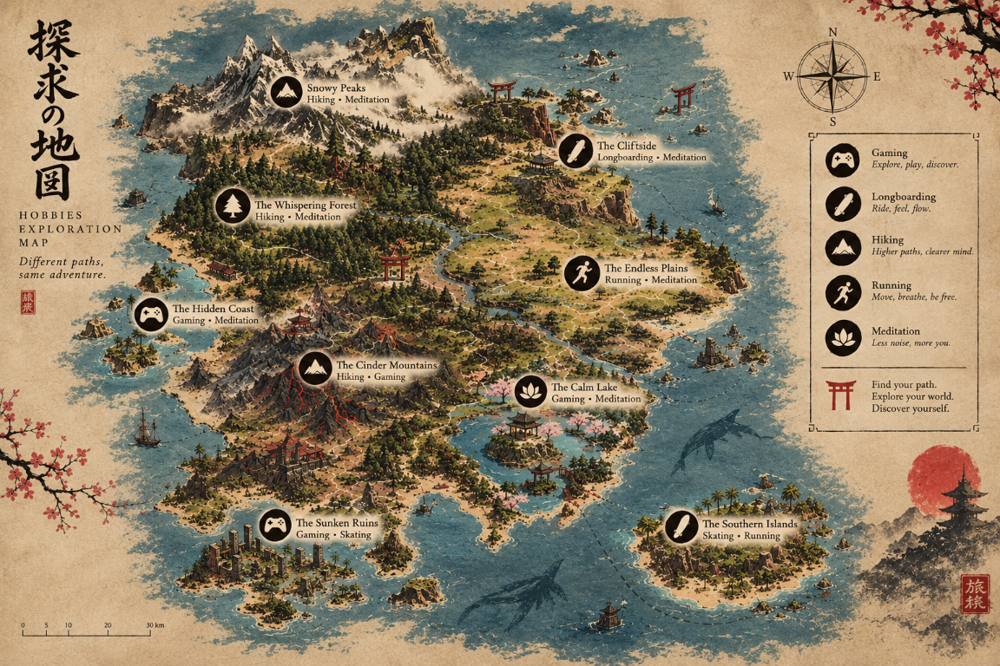

Gaming shop
+8 AÑOS DE EXPERIENCIAExperiencia en el sector de los videojuegos, gestionando una tienda especializada y ayudando a los clientes.
ESTUDIANTE DE DAM · EXPLORADOR DIGITAL
Entre líneas de código y caminos desconocidos,
cada día es una nueva aventura.
Valencia, España · Pronóstico actual
--°
Consultando el cielo…
Preparando el pronóstico…
El comienzo de mi historia
Soy estudiante de primer curso de Desarrollo de Aplicaciones Multiplataforma (DAM) en el IES Simarro.
Mi pasión por la tecnología comenzó con los videojuegos y se convirtió en más de ocho años de experiencia en una tienda de videojuegos, resolviendo problemas de software y reparando dispositivos.
Ahora quiero ampliar mis conocimientos, aprender a programar y descubrir nuevas oportunidades en el mundo del desarrollo.
Experiencia práctica y nuevas habilidades que sigo desarrollando.
Experiencia en el sector de los videojuegos, gestionando una tienda especializada y ayudando a los clientes.
Diagnóstico y resolución de problemas de software en diferentes dispositivos, buscando soluciones prácticas.
Reparación y mantenimiento de consolas y mandos de videojuegos, además de solucionar problemas técnicos.
Estudio inglés, sigo aprendiendo español y estoy desarrollando mis conocimientos de programación.
Gaming, skating, senderismo, running y rincones para meditar. Elige un lugar para abrir su foto.

Siempre hay algo nuevo que aprender.
Adquirir conocimientos de programación y desarrollar mis propios proyectos.
Explorar nuevas tecnologías y mejorar mis habilidades informáticas.
Seguir aprendiendo español para comunicarme mejor y crecer personal y profesionalmente.